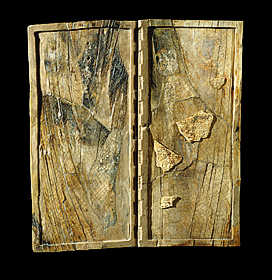

Scribes sometimes used cuneiform on writing boards. These boards were made of wood or ivory with a writing surface covered with wax. The wax could be melted and reused.

This is an ivory writing board from about 715 B.C. It was found in a well at Nimrud.